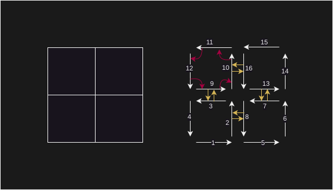

Function honeycomb_utils::generation::square_cmap2
source · pub fn square_cmap2<T: CoordsFloat>(n_square: usize) -> CMap2<T>Expand description
Generate a [CMap2] representing a mesh made up of squares.
This function builds and returns a 2-map representing a square mesh
made of n_square * n_square square cells.
§Arguments
n_square: usize– Dimension of the returned mesh.
§Generics
const T: CoordsFloat– Generic parameter of the returned [CMap2].
§Return / Panic
Returns a boundary-less [CMap2] of the specified size. The map contains
4 * n_square * n_square darts and (n_square + 1) * (n_square + 1)
vertices.
§Example
use honeycomb_core::CMap2;
use honeycomb_utils::generation::square_cmap2;
let cmap: CMap2<f64> = square_cmap2(2);The above code generates the following map:

Note that β1 is only represented in one cell but is defined Everywhere following the same pattern. Dart indexing is also consistent with the following rules:
- inside a cell, the first dart is the one on the bottom, pointing towards the right. Increments (and β1) follow the trigonometric orientation.
- cells are ordered from left to right, from the bottom up. The same rule applies for face IDs.